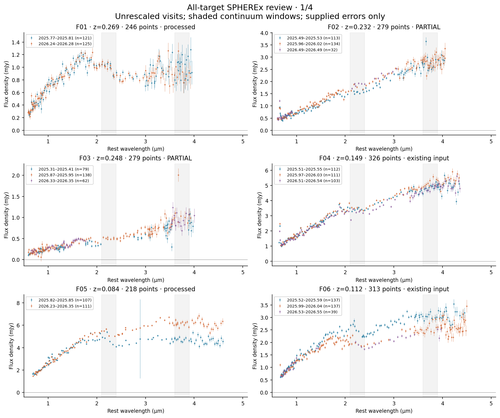
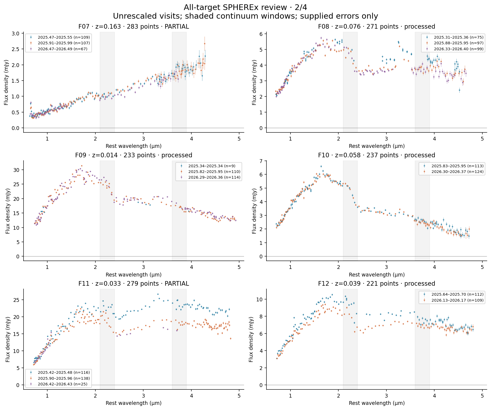
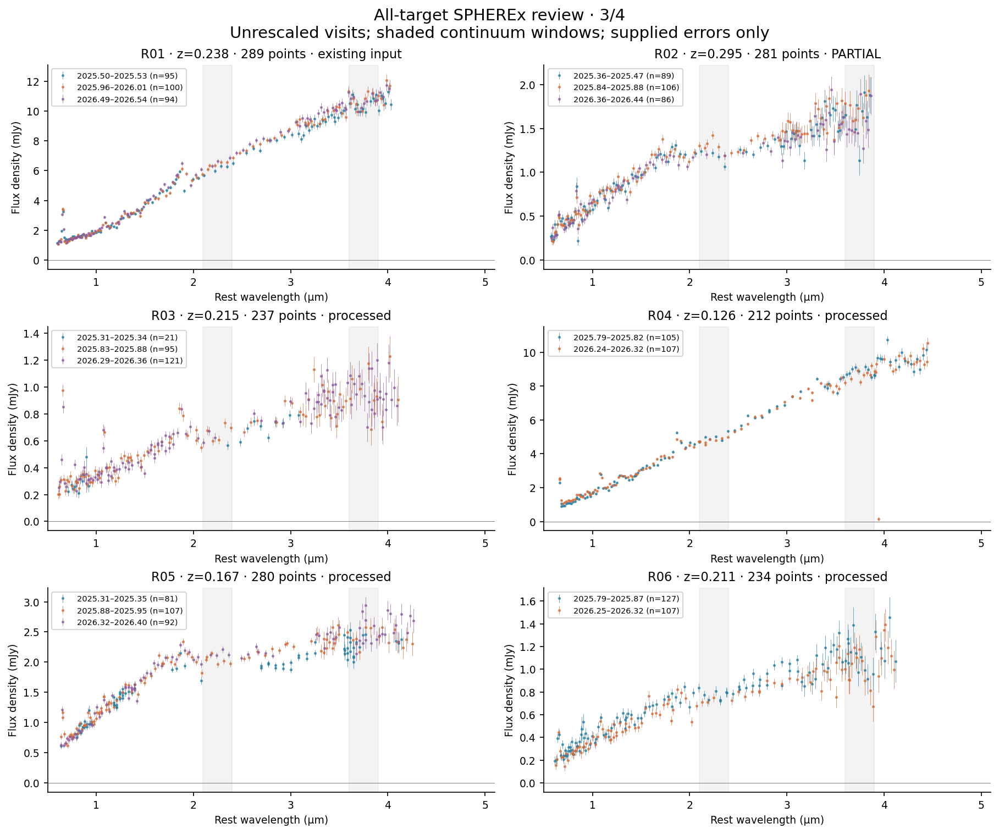
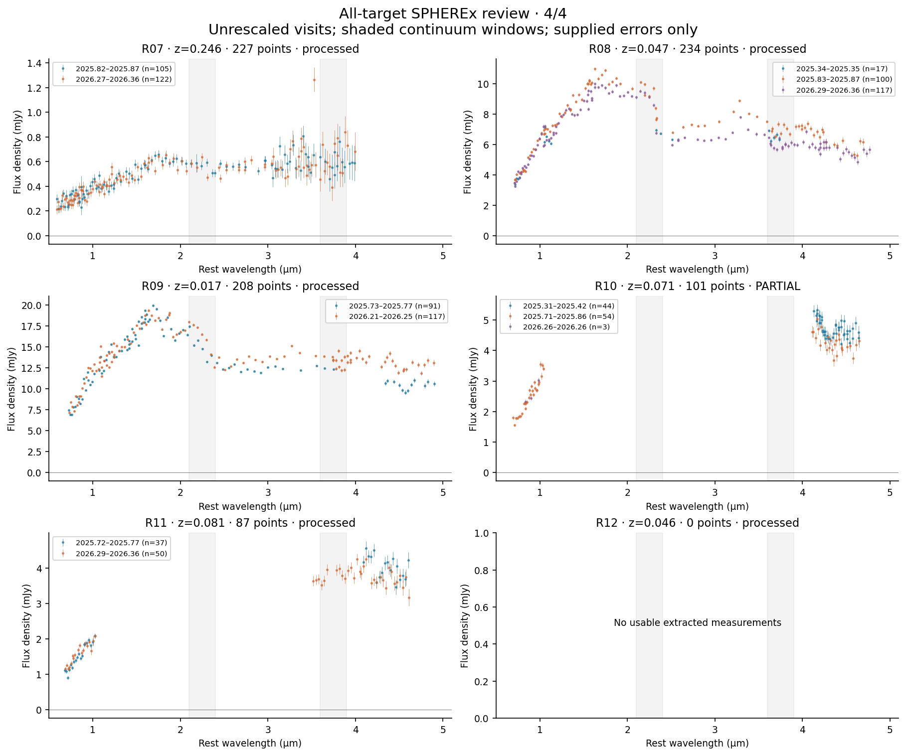
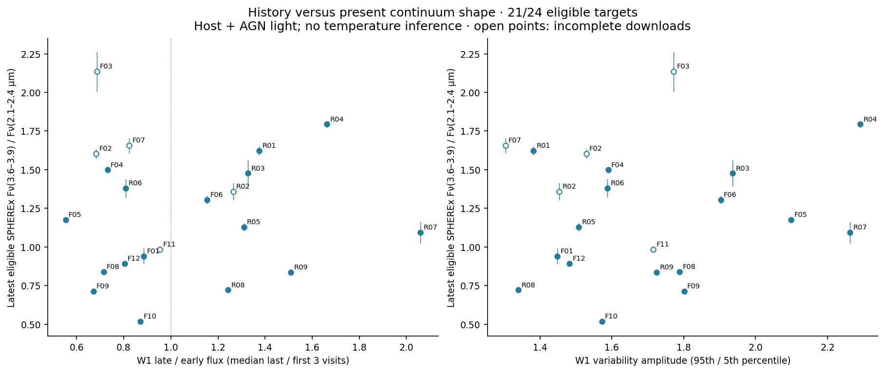
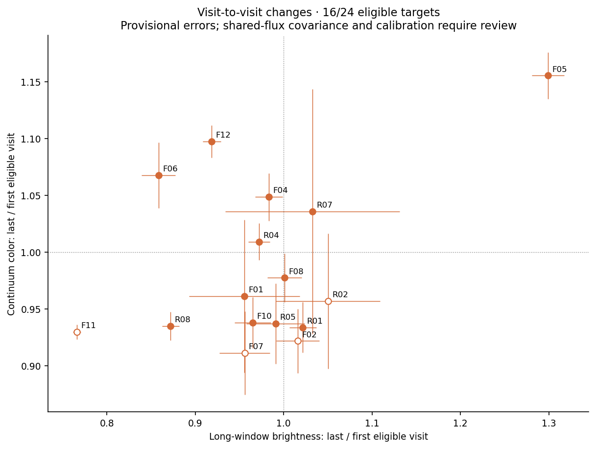
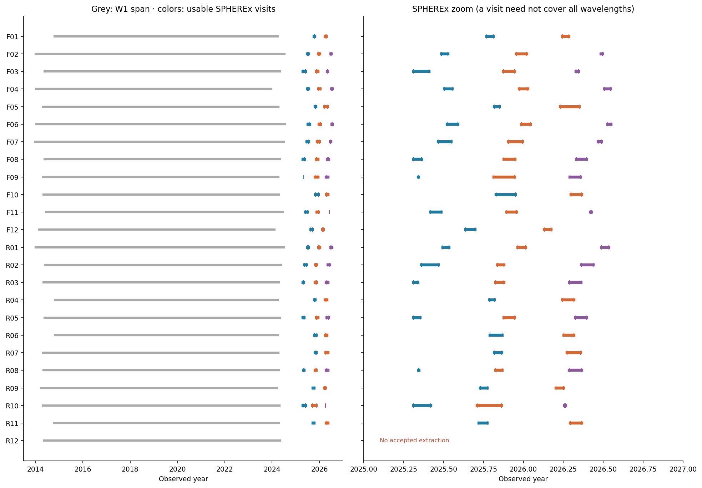

Snapshot: 2026-09-29T21:09:53.871221+00:00. Exploratory review, including incomplete downloads.
Fluxes retain the original scale. Colors describe total extracted light. Formal error bars are provisional until calibration and extraction quality are checked.







| id | download_complete | requested | accepted | quality_rejected | invalid_accepted | z | valid_points | visits |
|---|---|---|---|---|---|---|---|---|
| F01 | True | 263 | 257.0 | 6.0 | 11 | 0.268900 | 246 | 2 |
| F02 | False | 406 | 290.0 | 14.0 | 11 | 0.231500 | 279 | 3 |
| F03 | False | 346 | 294.0 | 9.0 | 15 | 0.248300 | 279 | 3 |
| F04 | True | 338 | 338.0 | 0.0 | 12 | 0.148600 | 326 | 3 |
| F05 | True | 235 | 228.0 | 7.0 | 10 | 0.084200 | 218 | 2 |
| F06 | True | 331 | 331.0 | 0.0 | 18 | 0.111700 | 313 | 3 |
| F07 | False | 348 | 298.0 | 5.0 | 15 | 0.163100 | 283 | 3 |
| F08 | True | 287 | 277.0 | 10.0 | 6 | 0.075800 | 271 | 3 |
| F09 | True | 247 | 243.0 | 4.0 | 10 | 0.014200 | 233 | 3 |
| F10 | True | 254 | 246.0 | 8.0 | 9 | 0.058200 | 237 | 2 |
| F11 | False | 399 | 286.0 | 16.0 | 7 | 0.033200 | 279 | 3 |
| F12 | True | 238 | 236.0 | 2.0 | 15 | 0.039400 | 221 | 2 |
| R01 | True | 289 | 289.0 | 0.0 | 0 | 0.237722 | 289 | 3 |
| R02 | False | 310 | 296.0 | 6.0 | 15 | 0.295000 | 281 | 3 |
| R03 | True | 254 | 250.0 | 4.0 | 13 | 0.214800 | 237 | 3 |
| R04 | True | 230 | 221.0 | 9.0 | 9 | 0.126400 | 212 | 2 |
| R05 | True | 301 | 298.0 | 3.0 | 18 | 0.167100 | 280 | 3 |
| R06 | True | 257 | 248.0 | 9.0 | 14 | 0.211100 | 234 | 2 |
| R07 | True | 248 | 243.0 | 5.0 | 16 | 0.246500 | 227 | 2 |
| R08 | True | 253 | 248.0 | 5.0 | 14 | 0.046800 | 234 | 3 |
| R09 | True | 255 | 226.0 | 29.0 | 18 | 0.017200 | 208 | 2 |
| R10 | False | 423 | 107.0 | 196.0 | 6 | 0.071000 | 101 | 3 |
| R11 | True | 232 | 90.0 | 142.0 | 3 | 0.081100 | 87 | 2 |
| R12 | True | 295 | 0.0 | 295.0 | 0 | 0.045700 | 0 | 0 |